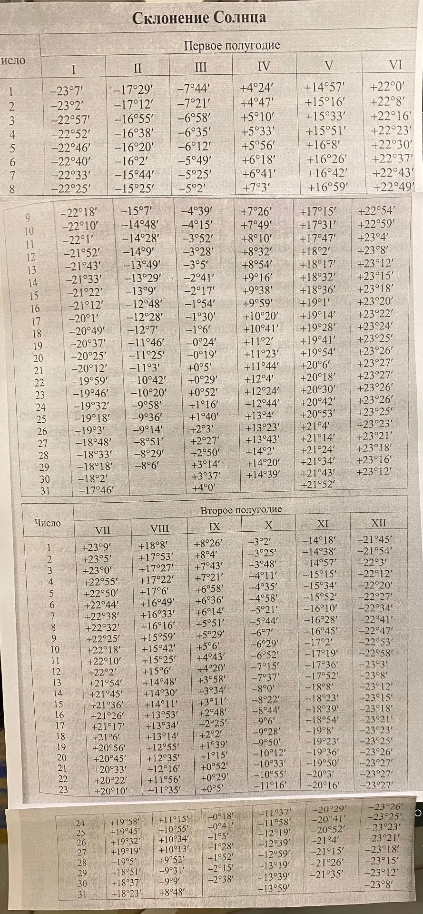

Склонение Солнца
Склонение δ — угол между направлением на Солнце и плоскостью земного экватора. За год оно меняется от −23°27′ до +23°27′: Солнце бывает то к северу, то к югу от экватора.
δ =
Солнце в центре
- Экватор
- Тропики
- Орбита Земли (плоскость эклиптики)
- Направление на Солнце
- Угол δ
- Солнце в зените
Как измеряется δ
Разрез Земли через её ось и направление на Солнце. Угол измеряем у Земли.
В полдень Солнце стоит в зените там, где его лучи падают отвесно. Угол δ у центра Земли равен широте этого места.
Особые дни:
Вращайте модель мышью или пальцем. Масштаб — кнопками −/+ (или Ctrl + колёсико). Дату можно выбрать ползунком, кнопками особых дней или щелчком по графику ниже.
Склонение Солнца за год
Пунктирные вертикали — дни равноденствий и солнцестояний.
Исходная таблица
Открыть изображение в полном размере · Скачать оригинал PNG

